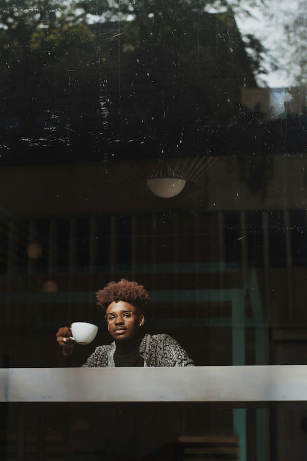
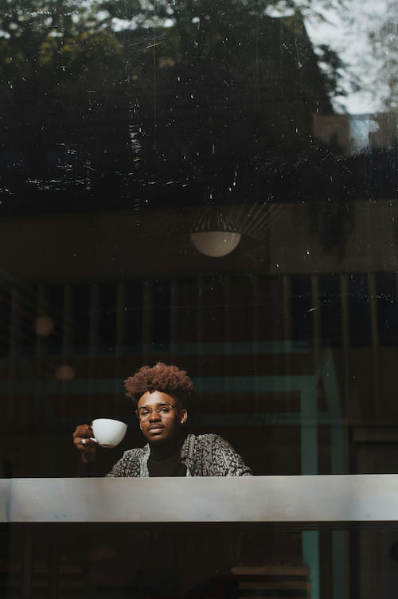

Locura: Chispa que transforma a las personas soñadoras en gastronómicas. Únete al club 😎
Aprende a manejar un negocio gastronómico.
De la idea a la apertura. Entiende como montar un sistema de trabajo y hacerlo funcionar.
¡Agenda la primera sesión!(La primera es sin costo, para evaluar el proyecto)


 
